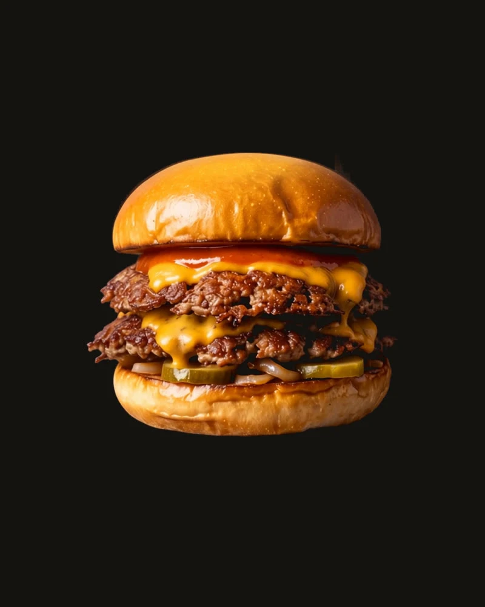
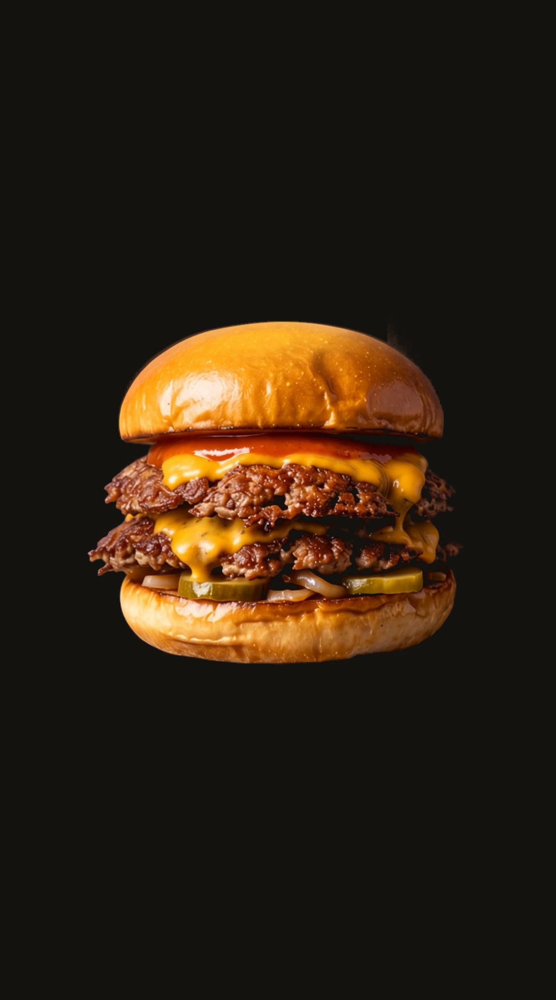
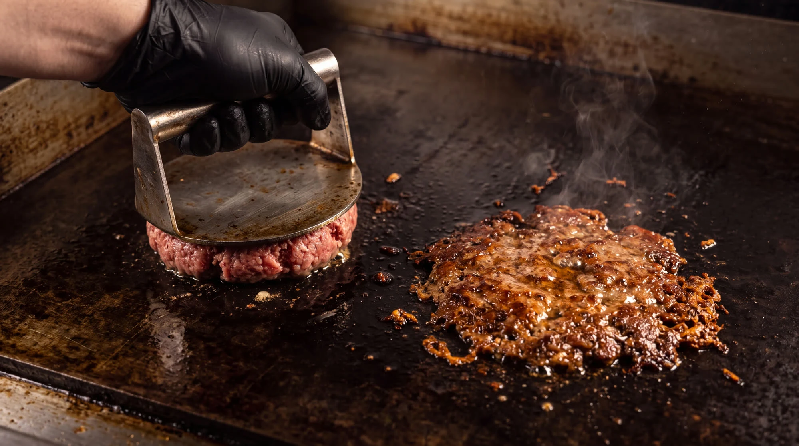
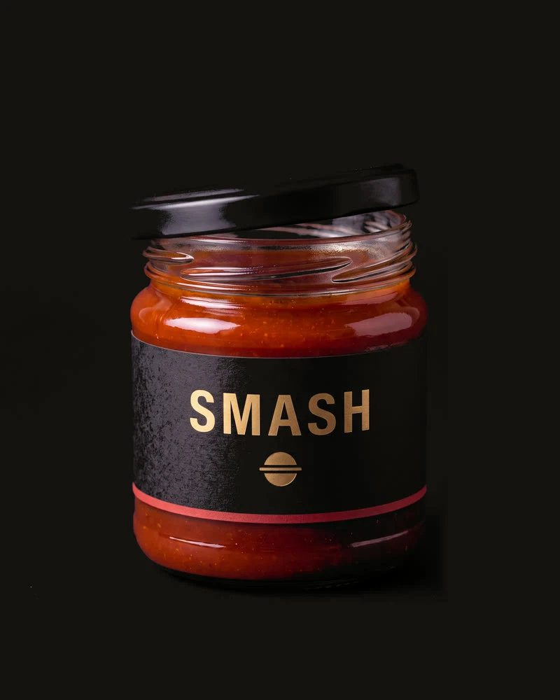
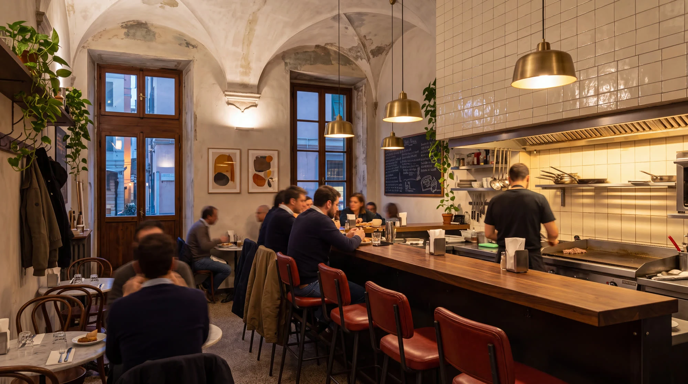

La Clásica
S/ 19Doble smash, doble cheddar, cebolla caramelizada, pepinillos y salsa de páprika de la casa.
¿Viste esa salsa caer? La preparamos cada mañana con páprika ahumada, tomate asado y un toque de miel. Ahora abramos la hamburguesa.

Desliza: la hamburguesa se abre capa por capa y te muestra por qué está hecha así.
Siete capas. Una mordida.
La bola de carne llega a la plancha de hierro bien caliente y la presionamos una sola vez. Luego no la movemos: así se forma la costra y los bordes quedan crocantes. Una vuelta, cheddar derretido y listo.


Páprika ahumada, tomate asado a la plancha, vinagre y un toque de miel. La cocinamos cada mañana y la envasamos para que también la lleves a casa.
Elige tus hamburguesas y una hora de recojo. La carne va a la plancha minutos antes para que llegue recién hecha. Pagas al recoger.

Un espacio de barrio, cocina abierta y atención sin apuro: pasa, pide en el mostrador y disfruta todo recién hecho.
★★★★★“Esa costrita en los bordes queda buenaza. La smash perfecta para darte un gusto.”
★★★★★“La salsa de la casa está buenísima; ya se me acabó un frasco.”
★★★★★“Carta corta y todo sale recién hecho, sin apuro.”
★★★★★“La Veggie wins over even the meat eaters. My husband stole mine.”
★★★★★“Pedí para las ocho y media y estuvo listo justo a esa hora, calientito.”